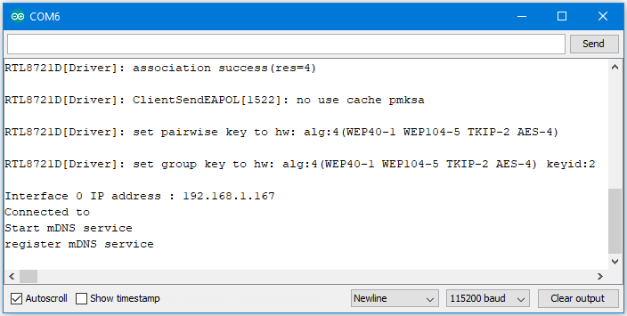
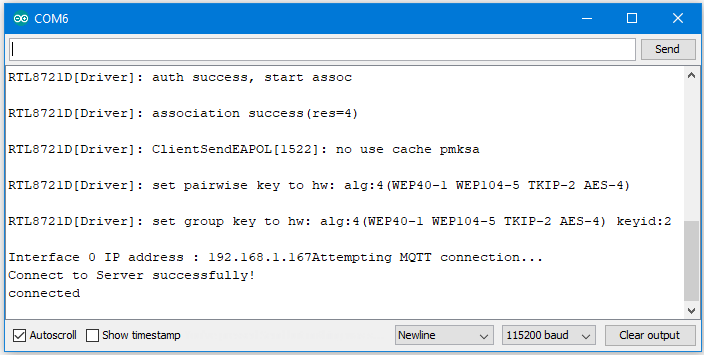
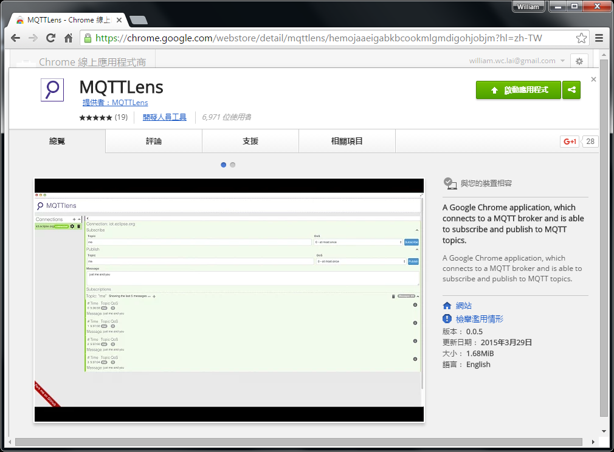
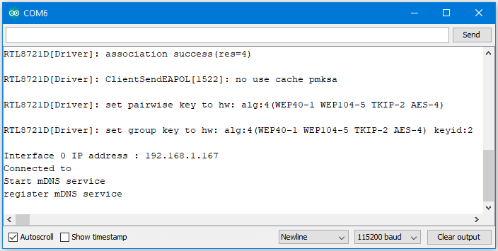
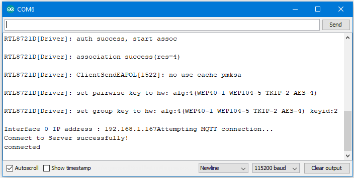
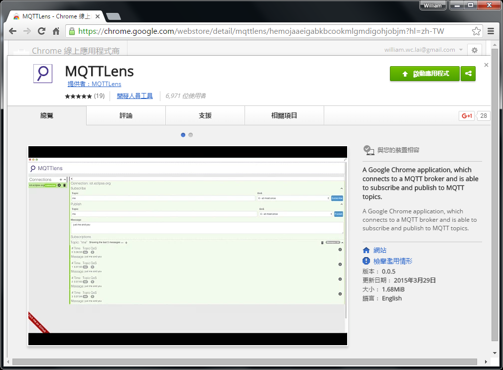

[RTL8722CSM] [RTL8722DM] Use MQTT To Upload And Listen To Data¶
Intro to MQTT
MQTT (Message Queuing Telemetry Transport) is a protocol proposed by IBM and Eurotech. The introduction in MQTT Official Website: MQTT is a machine-to-machine (M2M)/”Internet of Things” connectivity protocol. It was designed as an extremely lightweight publish/subscribe messaging transport. We can say MQTT is a protocol designed for IoT. MQTT is based on TCP/IP and transmits/receives data via publish/subscribe. Please refer to the figure below:

In the operation of MQTT, there are several roles:
- Publisher: Usually publishers are the devices equipped with sensors
(ex. Ameba). Publishers uploads the data of the sensors to MQTT-Broker, which serves as a database with MQTT service.
- Subscriber: Subscribers are referred to the devices which receive and
observe messages, such as a laptop or a mobile phone.
- Topic: Topic is used to categorized the messages, for example the
topic of a message can be “PM2.5” or “Temperature”. Subscribers can choose messages of which topics they want to receive.
Preparation
Ameba x 1
Example
In this example, we connect Ameba to MQTT-Broker. Then send messages as
publisher and receive messages from MQTT-Broker as subscriber. Open the
MQTT example “File” -> “Examples” -> “AmebaMQTTClient” ->
“MQTT_Basic” Please modify some WiFi-related parameters. And
some information related to MQTT: The “mqttServer” refers to the
MQTT-Broker, we use the free MQTT sandbox “test.mosquitto.org” for
testing. “clientId” is an identifier for MQTT-Broker to identify the
connected device. “publishTopic” is the topic of the published message,
we use “outTopic” in the example. The devices subscribe to “outTopic”
will receive the message. “publishPayload” is the content to be
published. “subscribeTopic” is to tell MQTT-broker which topic we want
to subscribe to. Next, compile the code and upload it to Ameba. Press
the reset button, then open the serial monitor After Ameba is
connected to MQTT server, it sends the message “hello world” to
“outTopic”. To see the message, we need another MQTT client. Here we use
a chrome plugin “MQTTLens” to be the MQTT client. You can find it in
google webstore.Install and open the MQTTLens, click “+” next
to “Connection” on the left, and fill in the required information
Please modify some WiFi-related parameters. And
some information related to MQTT: The “mqttServer” refers to the
MQTT-Broker, we use the free MQTT sandbox “test.mosquitto.org” for
testing. “clientId” is an identifier for MQTT-Broker to identify the
connected device. “publishTopic” is the topic of the published message,
we use “outTopic” in the example. The devices subscribe to “outTopic”
will receive the message. “publishPayload” is the content to be
published. “subscribeTopic” is to tell MQTT-broker which topic we want
to subscribe to. Next, compile the code and upload it to Ameba. Press
the reset button, then open the serial monitor After Ameba is
connected to MQTT server, it sends the message “hello world” to
“outTopic”. To see the message, we need another MQTT client. Here we use
a chrome plugin “MQTTLens” to be the MQTT client. You can find it in
google webstore.Install and open the MQTTLens, click “+” next
to “Connection” on the left, and fill in the required information
{kind=link}
{kind=link}
{kind=link}
- Connection Name: Used to identify the connection, you can choose a
name you like.
Hostname: The MQTT-Broker server, here we use “iot.eclipse.org”
Client ID: We use the default randomly generated ID.
Then click “CREATE CONNECTION”. Since we have not registered the
topic we want to listen to, we would not receive any messages now. Fill
in “outTopic” in the “Topic” field and click “Subscribe”. Wait for Ameba
to send next message (or you can press the reset button). Then you can
see the “hello world” message show up.
Since we have not registered the
topic we want to listen to, we would not receive any messages now. Fill
in “outTopic” in the “Topic” field and click “Subscribe”. Wait for Ameba
to send next message (or you can press the reset button). Then you can
see the “hello world” message show up.